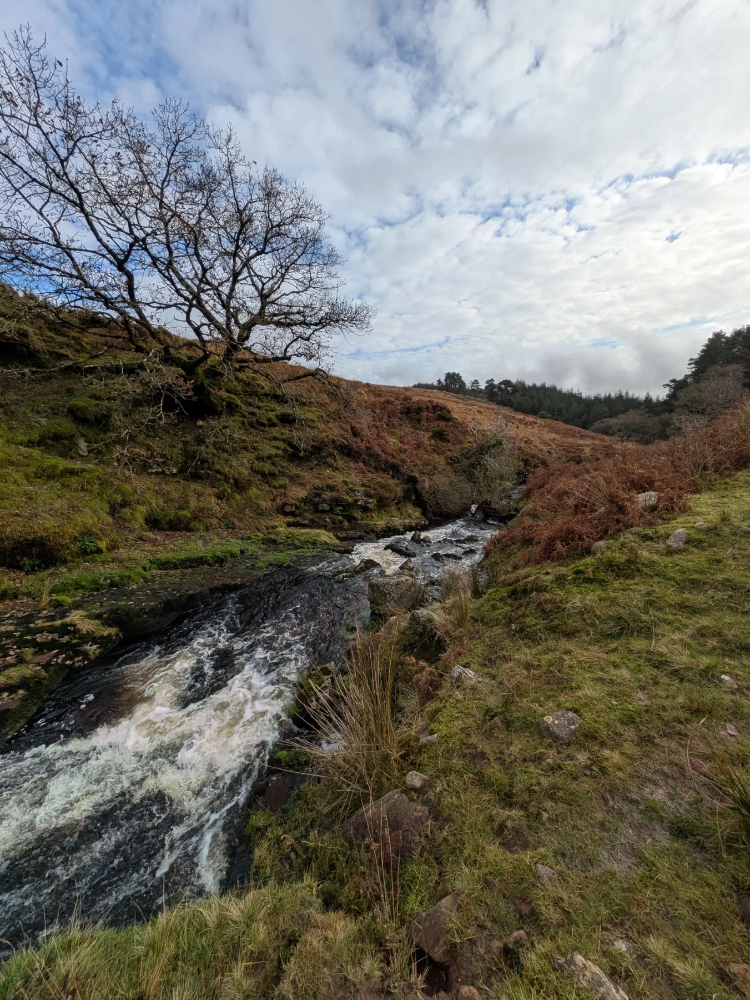

Adventure without limits
Life as a Rover Scout
Rover Scouts is the section for young adults aged 18–25 who want to continue their Scouting adventure, develop new skills and make a positive difference in their communities.
Rover Scouting offers the freedom to take on new challenges, explore new places and build lasting friendships. Rovers take responsibility for planning and organising their own activities, supported by the wider Scout Group.
Adventure & Exploration
From hiking and camping to outdoor expeditions and international adventures, Rover Scouts have opportunities to explore, challenge themselves and experience something new.
Leadership & Independence
Rover Scouts develop leadership, teamwork and organisational skills by planning activities, taking on responsibilities and supporting younger sections within the Scout Group.
Community & Volunteering
Make a positive difference by supporting community projects, volunteering and helping organise events and activities.
Friendship & Fun
Meet new people, share experiences and build friendships that last. Rover Scouting combines adventure with social activities, teamwork and personal development.
Getting Involved
Whether you've been involved in Scouting for years or are completely new, Rover Scouts offers opportunities to get involved, meet people and take on new challenges.
Rover Scouts organise activities around their interests and availability, giving members the flexibility to balance Scouting with college, work and other commitments.
Age Group
18–25 years
Meeting Times
Contact us for details of upcoming meetings and activities.
Location
Scout Hall, Station Road
Ballincollig, Co. Cork
P31 EK76
Who Can Join?
Young adults aged 18–25. Previous Scouting experience is not required.